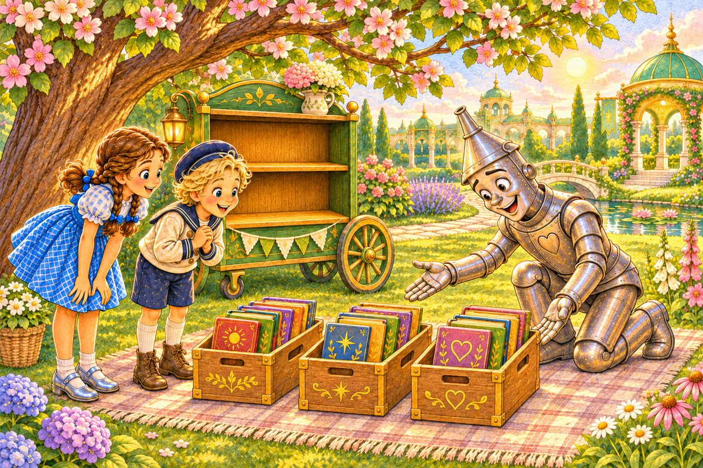
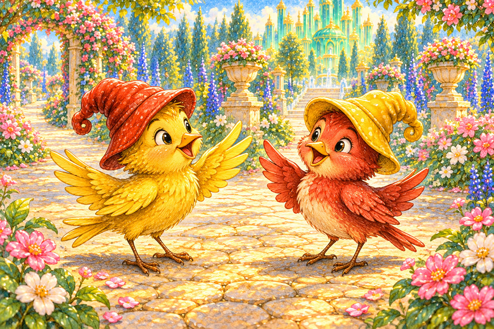
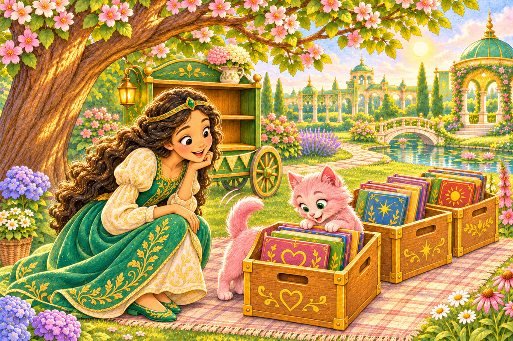
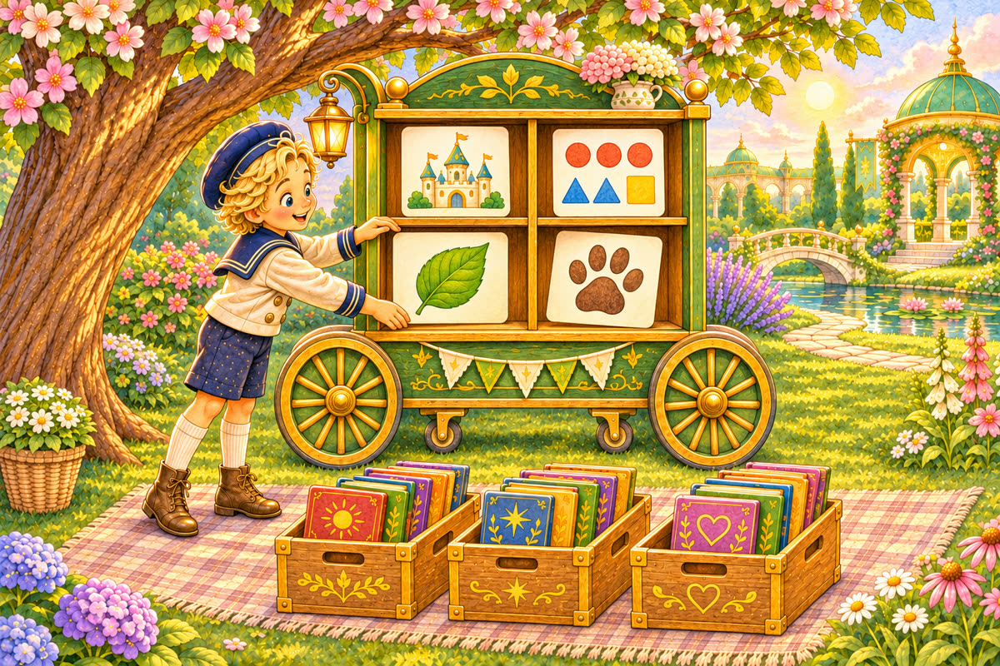
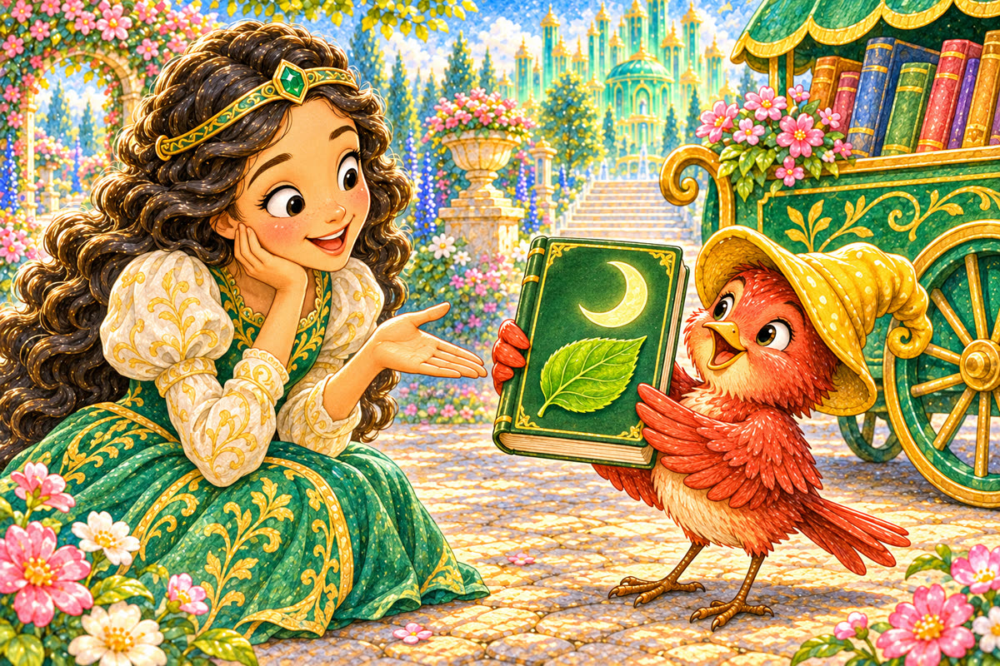
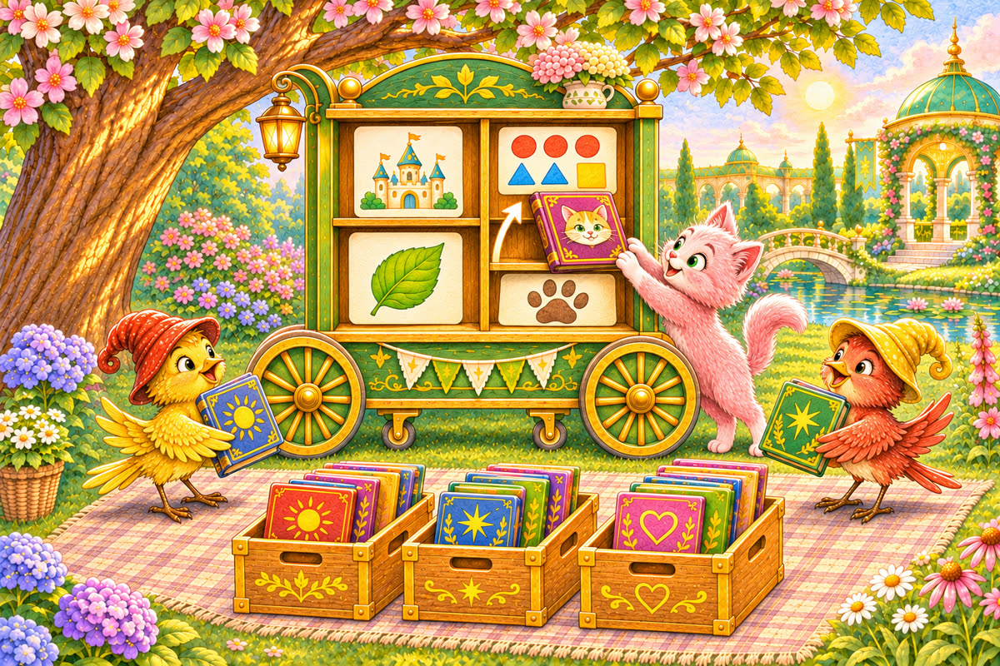
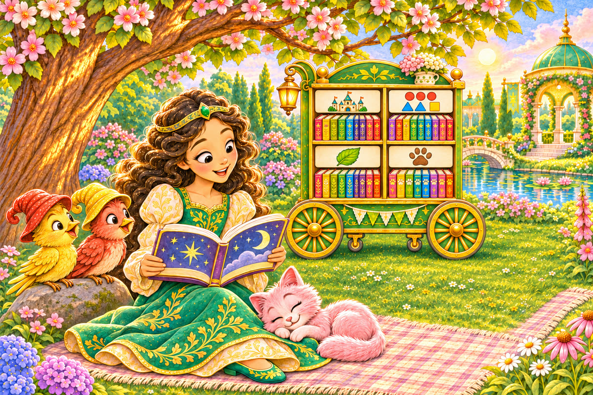

Pahina 1
Kinabukasan, dinala ni Tin Woodman ang tatlong kahon sa hardin.
Puno ang mga iyon ng mga bagong aklat para sa kariton.
Isang munting kuwento sa Lupain ng Oz
Tatlong bagong pahina muna kung gusto mo. Pagkatapos, puwedeng ang mga kard ang pumili ng mga paboritong pahina.

Kinabukasan, dinala ni Tin Woodman ang tatlong kahon sa hardin.
Puno ang mga iyon ng mga bagong aklat para sa kariton.

Dumating ang ibong dilaw kasama ang kaibigan niyang ibong pula na may dilaw na sombrero.
Bumati ang dalawang ibon.

Kasunod nila si Ozma at ang kanyang kuting na kulay rosas.
Sumilip ang kuting sa isang kahon at kumawag ito ng buntot.
“Aayusin natin ang mga aklat,” sabi ni Dorothy.
“May kuwento, matematika, agham, at aklat tungkol sa pusa.”
Apat na puwang ang nasa kariton.

Gumuhit si Button-Bright ng apat na larawan: kastilyo, mga bilang, dahon, at bakas ng paa.
Inilagay niya ang bawat larawan sa isang puwang.
Kinuha ng ibong dilaw ang aklat na may kastilyo.
Binuksan iyon ni Dorothy.
Kuwento iyon tungkol sa batang naglakbay.
Inilagay nila sa unang puwang.

Nagdala ang ibong pula ng aklat na may dahon at buwan.
Tungkol iyon sa halaman at kalangitan.
“Agham!” sabi ni Ozma.
Nakita ng kuting ang aklat na may pusa sa pabalat.
Tinapik niya iyon at itinulak sa puwang ng mga pusa.
“Tingnan muna natin ang loob,” sabi ni Dorothy.
Puro bilang at palaisipan ang mga pahina.
Nagbibilang ang pusang nasa larawan ng sampung isda.

“Matematika pala!” sabi ni Button-Bright.
Inilipat ng kuting ang aklat sa tamang puwang.
Tumulong ang mga ibon sa pagdala ng iba pang aklat.
May mga aklat tungkol sa hugis, hayop, bituin, pakikipagsapalaran, at pag-aalaga ng pusa.
Tiningnan muna nila ang loob bago pumili ng puwang.

Nang maayos na ang lahat, pumili si Ozma ng aklat tungkol sa mga bituin.
Humiga ang kuting sa tabi niya.
Nakinig ang magkaibigang ibon.
Kung gusto ninyong mag-usap